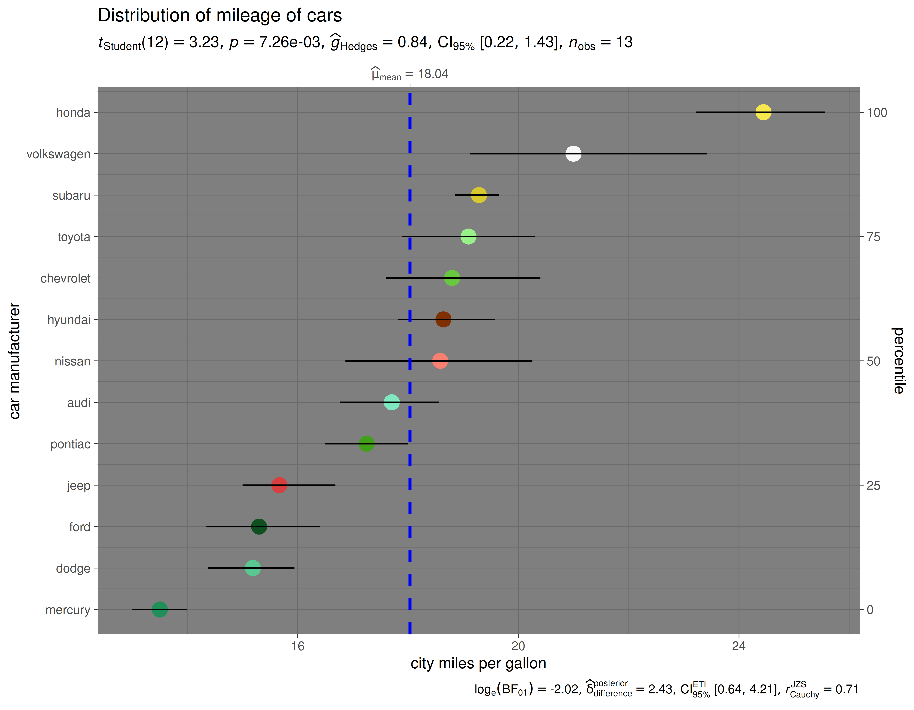

ggdotplotstats
Indrajeet Patil
2022-01-15
Source:vignettes/web_only/ggdotplotstats.Rmd
ggdotplotstats.RmdYou can cite this package/vignette as:
Patil, I. (2021). Visualizations with statistical details: The
'ggstatsplot' approach. Journal of Open Source Software, 6(61), 3167,
doi:10.21105/joss.03167
A BibTeX entry for LaTeX users is
@Article{,
doi = {10.21105/joss.03167},
url = {https://doi.org/10.21105/joss.03167},
year = {2021},
publisher = {{The Open Journal}},
volume = {6},
number = {61},
pages = {3167},
author = {Indrajeet Patil},
title = {{Visualizations with statistical details: The {'ggstatsplot'} approach}},
journal = {{Journal of Open Source Software}},
}Lifecycle: 
The function ggdotplotstats can be used for data
exploration and to provide an easy way to make
publication-ready dot plots/charts with appropriate and
selected statistical details embedded in the plot itself. In this
vignette, we will explore several examples of how to use it.
This function is a sister function of gghistostats with
the difference being it expects a labeled numeric variable.
Distribution of a sample with ggdotplotstats
Let’s begin with a very simple example from the
ggplot2 package (ggplot2::mpg), a subset of
the fuel economy data that the EPA makes available on http://fueleconomy.gov.
## looking at the structure of the data using glimpse
dplyr::glimpse(ggplot2::mpg)
#> Rows: 234
#> Columns: 11
#> $ manufacturer <chr> "audi", "audi", "audi", "audi", "audi", "audi", "audi", "…
#> $ model <chr> "a4", "a4", "a4", "a4", "a4", "a4", "a4", "a4 quattro", "…
#> $ displ <dbl> 1.8, 1.8, 2.0, 2.0, 2.8, 2.8, 3.1, 1.8, 1.8, 2.0, 2.0, 2.…
#> $ year <int> 1999, 1999, 2008, 2008, 1999, 1999, 2008, 1999, 1999, 200…
#> $ cyl <int> 4, 4, 4, 4, 6, 6, 6, 4, 4, 4, 4, 6, 6, 6, 6, 6, 6, 8, 8, …
#> $ trans <chr> "auto(l5)", "manual(m5)", "manual(m6)", "auto(av)", "auto…
#> $ drv <chr> "f", "f", "f", "f", "f", "f", "f", "4", "4", "4", "4", "4…
#> $ cty <int> 18, 21, 20, 21, 16, 18, 18, 18, 16, 20, 19, 15, 17, 17, 1…
#> $ hwy <int> 29, 29, 31, 30, 26, 26, 27, 26, 25, 28, 27, 25, 25, 25, 2…
#> $ fl <chr> "p", "p", "p", "p", "p", "p", "p", "p", "p", "p", "p", "p…
#> $ class <chr> "compact", "compact", "compact", "compact", "compact", "c…Let’s say we want to visualize the distribution of mileage by car manufacturer.
## for reproducibility
set.seed(123)
library(ggstatsplot)
## removing factor level with very few no. of observations
df <- dplyr::filter(ggplot2::mpg, cyl %in% c("4", "6"))
## creating a vector of colors using `paletteer` package
paletter_vector <-
paletteer::paletteer_d(
palette = "palettetown::venusaur",
n = nlevels(as.factor(df$manufacturer)),
type = "discrete"
)
## plot
ggdotplotstats(
data = df,
x = cty,
y = manufacturer,
xlab = "city miles per gallon",
ylab = "car manufacturer",
test.value = 15.5,
point.args = list(
shape = 16,
color = paletter_vector,
size = 5
),
title = "Distribution of mileage of cars",
ggtheme = ggplot2::theme_dark()
)
Grouped analysis with grouped_ggdotplotstats
What if we want to do the same analysis separately for different engines with different numbers of cylinders?
ggstatsplot provides a special helper function for
such instances: grouped_ggdotplotstats. This is merely a
wrapper function around combine_plots. It applies
ggdotplotstats across all levels of a
specified grouping variable and then combines the
individual plots into a single plot.
Let’s see how we can use this function to apply
ggdotplotstats to accomplish our task.
## for reproducibility
set.seed(123)
## removing factor level with very few no. of observations
df <- dplyr::filter(ggplot2::mpg, cyl %in% c("4", "6"))
## plot
grouped_ggdotplotstats(
## arguments relevant for ggdotplotstats
data = df,
grouping.var = cyl, ## grouping variable
x = cty,
y = manufacturer,
xlab = "city miles per gallon",
ylab = "car manufacturer",
type = "bayes", ## Bayesian test
test.value = 15.5,
## arguments relevant for `combine_plots`
annotation.args = list(title = "Fuel economy data"),
plotgrid.args = list(nrow = 2)
)
Grouped analysis with {purrr}
Although this is a quick and dirty way to explore a large amount of
data with minimal effort, it does come with an important limitation:
reduced flexibility. For example, if we wanted to add, let’s say, a
separate test.value argument for each gender, this is not
possible with grouped_ggdotplotstats. For cases like these,
or to run separate kinds of tests (robust for some, parametric for
other, while Bayesian for some other levels of the group) it would be
better to use purrr.
See the associated vignette here: https://indrajeetpatil.github.io/ggstatsplot/articles/web_only/purrr_examples.html
Summary of tests
Central tendency measure
| Type | Measure | Function used |
|---|---|---|
| Parametric | mean | parameters::describe_distribution |
| Non-parametric | median | parameters::describe_distribution |
| Robust | trimmed mean | parameters::describe_distribution |
| Bayesian | MAP (maximum a posteriori probability) estimate | parameters::describe_distribution |
Hypothesis testing
| Type | Test | Function used |
|---|---|---|
| Parametric | One-sample Student’s t-test | stats::t.test |
| Non-parametric | One-sample Wilcoxon test | stats::wilcox.test |
| Robust | Bootstrap-t method for one-sample test | WRS2::trimcibt |
| Bayesian | One-sample Student’s t-test | BayesFactor::ttestBF |
Effect size estimation
| Type | Effect size | CI? | Function used |
|---|---|---|---|
| Parametric | Cohen’s d, Hedge’s g | ✅ |
effectsize::cohens_d,
effectsize::hedges_g
|
| Non-parametric | r (rank-biserial correlation) | ✅ | effectsize::rank_biserial |
| Robust | trimmed mean | ✅ | WRS2::trimcibt |
| Bayes Factor | \(\delta_{posterior}\) | ✅ | bayestestR::describe_posterior |
Reporting
If you wish to include statistical analysis results in a publication/report, the ideal reporting practice will be a hybrid of two approaches:
the ggstatsplot approach, where the plot contains both the visual and numerical summaries about a statistical model, and
the standard narrative approach, which provides interpretive context for the reported statistics.
For example, let’s see the following example:
ggdotplotstats(morley, Speed, Expt, test.value = 800)The narrative context (assuming type = "parametric") can
complement this plot either as a figure caption or in the main text-
Student’s t-test revealed that, across 5 experiments, the speed of light was significantly different than posited speed. The effect size \((g = 1.22)\) was very large, as per Cohen’s (1988) conventions. The Bayes Factor for the same analysis revealed that the data were 3.46 times more probable under the alternative hypothesis as compared to the null hypothesis. This can be considered moderate evidence (Jeffreys, 1961) in favor of the alternative hypothesis.
Suggestions
If you find any bugs or have any suggestions/remarks, please file an issue on GitHub: https://github.com/IndrajeetPatil/ggstatsplot/issues